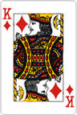
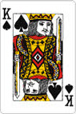
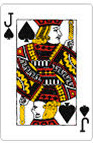
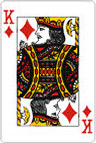
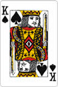
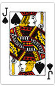
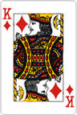
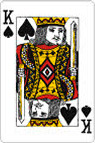
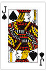
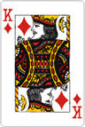
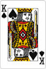
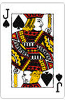


| Med egne ord: hvad påvirker position-property? | det påvirker den måde element positionere sig på |
|---|---|
| Hvad gør position: relative? | vil bruge top, right, left, bottom og andre element flytter sig ikke med |
| Hvad positionerer absolut-positionerede elementer sig i forhold til? | den positionere sig |
| Er der et trick, så man kan styre hvor absolut-positionerede elementer stiller sig? | dunno |
| Hvad vil du mene du kan bruge position: sticky til? | fx navigation bar, så den flytter med når man går længere ned |